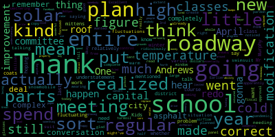
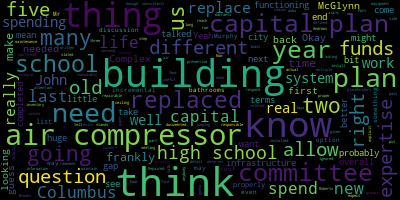
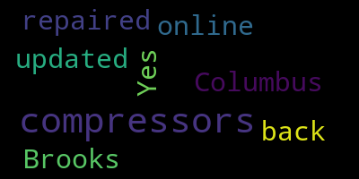

AI-generated transcript of Committee of the Whole Meeting - CIP
English | español | português | 中国人 | kreyol ayisyen | tiếng việt | ខ្មែរ | русский | عربي | 한국인
Back to all transcripts
[Lungo-Koehn]: can adequately access the proceedings in real time via technological means. In the event that we are unable to do so, despite best efforts, we will post in the City of Medford and Medford Community Media websites an audio or video recording, transcript, or other comprehensive record of proceedings as soon as possible after the meeting. The meeting can be viewed through Medford Community Media on Comcast Channel 22 and Verizon Channel 43 at 5 p.m. You can call in by using 1-929-205-6099. Please enter meeting ID 998-2637-3736 when prompted. Additionally, questions or comments can be submitted during the meeting by emailing medfordsc at medford.k12.ma.us. Those submitting must include the following information, your first and last name, your Medford street address, your question or comment. The agenda will be as follows, discussion of projects to be completed with the $816,000 left over from the science labs, $125,000 remaining from the Boyle project, and additional monies to be identified for capital improvements. Signed, Dr. Maurice-Edouard Vincent, superintendent of schools. Member McLaughlin, if you could take the roll.
[McLaughlin]: Member Graham? Here. Member Kreatz? Here. Member McLaughlin here. Member Mustone?
[Unidentified]: Here.
[McLaughlin]: Member Ruseau? Yeah. Member Van der Kloot? Present. Mayor Lungo-Koehn?
[Lungo-Koehn]: Present. Seven present, zero absent. We can start out. And I think we have a big birthday in the crowd, right, 50? Well, happy birthday.
[Kreatz]: Thank you, I don't know what you're talking about. Happy birthday.
[Lungo-Koehn]: We'll announce it at this meeting when not many people watch it. Thank you.
[McLaughlin]: Come on, 50's the best. Best decade ever. 50's the new 40, right? Wow, 50's when you like, I think, come into your own and you don't stop caring about what everybody thinks. I think Paul doesn't care. That's not new for me. Paul's there already? Yeah, well. Yeah, just saying. Yeah, no, I think we evolve. I think it's a good decade.
[Lungo-Koehn]: I'm not sure if we have Mr. McLaughlin on, but I know we have the school administration. I don't know if you wanna get us started and then we can ask questions.
[Murphy]: Sure, Mayor, the superintendent will be joining momentarily, I think, but if you'd like me to just jump in, as the mayor said, When the meeting was called to order, this is a discussion on the approximately $816,000 that was appropriated in September by the Medford City Council, drawn from two existing funding sources. They were unused funds for two projects that were previously completed at Medford High School. The council reclassified those funds, and at the time, the district sought the appropriation for those funds, and because we were under the impression at that point that a lot of the HVAC repair work that it was becoming clear at that point was going to be important to complete in order for us to bring students and staff back into the buildings to a full capacity amid the heightened air quality standards that we were living under as a result of the pandemic. And therefore we sought that funding so that we had essentially a reservoir of funding that we could use for the projects that we largely then were able to complete. As our understanding and as the guidance evolved related to the external funding sources, specifically the CARES Act funding, as there was greater clarity with that, we were able to essentially charge most of the HVAC repair work that was completed for this school year, the emergency work as it were, we were able to use those external funds for that. So as a result, the 816,000 is still intact. And there's been a discussion in this forum and then in some of the subcommittees as to what the priorities of that funding will be. Mayor, I do have a one slide deck that I could show if you'd like me to, to just give sort of a high level view of what are some of the potential priorities that have been identified. There's only four or five of them. So I'm happy to just discuss them as well. But if you'd like the visual, I'm happy to put that up.
[Lungo-Koehn]: That'd be great. Thank you.
[Murphy]: Pretty sure this is it. Right. So again, I don't think there's anything new here because we've had this discussion in various forums, but the sort of top five or so on our on our list of things that if there are no restrictions and just things we think of that need to be done or should be done based on the fact that they've been discussed for some time within the community, it has to do with the restroom rehabilitation project. I should say that in addition to the 816, there's approximately 160,000 or so remaining from an appropriation that was made, I believe in December of 2019, It was a $300,000 appropriation, and there were three or four priorities within that allocation. The restroom project is the largest piece of that that has not yet been completed, and that's the one that we talked about a month or so ago that we've met with the architect that provided the initial quote, and we're preparing the RFP to put that out to bid in the hope that that work can be completed late spring, early summer. There has been discussion here, and I assume there will be tonight, as to whether or not that should be expanded to encompass additional restrooms. The $155,000 quote, and that's an approximation, it's somewhere between 150 and 160, is for one set of restrooms. So one boys, one girls on the second floor of C building. When we met with the architect, Mr. McLaughlin and I spoke about whether or not we could assume that would be proportional In other words, if we were able to, if we were to say do all three restrooms that are stacked on top of each other in the building, could we multiply that quote by three and have an expectation that the cost would be, that would be about accurate. We were told that that would be about accurate. So I think obviously we have to, and he did say that there would be a need for new specifications to be drawn up for each set of restrooms due to even the slightest variability in the dimensions of the areas would require a specific specification. So based on where they are in the building and the size of the rooms, the expectation is that the complexity of the project is pretty similar. But I can't say definitively that it would be 155,000 times three. There also did not seem to be the case that there would be any types of savings if we were to do all three. That was sort of one of the things that we were asking about was if we were to commit to this to be a larger scale project and put it out to bid for say all three restrooms, could we anticipate savings because either through labor or materials and based on the scarcity of materials that's taking place in the world right now and the fact that only so much labor can be done at one time, The indication was that there wouldn't be a significant amount of savings, but obviously that potential is there. The front entrance rehabilitation project was a part of a conversation at the previous buildings and grounds subcommittee meeting. I believe Ms. Kreatz reported on that at the last school committee meeting. And I think everyone's familiar with that project and probably frankly, much more so than I am being relatively new. The HVAC repair projects are a continuation. We got a lot of work done this year. Our HVAC systems, I think it's probably fair to say, are in better condition than they have been in some time. But they were emergency work and there was some manipulation of systems that were done to make sure that we were meeting the heightened air quality standards. But we were advised at the time that not every strategy that was employed would be sustainable over an extended period of time. And so the manifestations of that, some folks, members of the community who may have been in Medford High School in recent months have probably noticed that there's a fluctuation in temperature that is not necessarily ideal or something that we want to make a permanent fixture in the facility. And so there'll be additional work that has to happen in terms of adjusting dampers and making sure that all of our systems are aligned in a way that our coils are properly maintained in a way that Hopefully we can have some more stability with it with regard to temperature, particularly during the winter months. Our information technology category, and again, you see that we haven't put a specific amount here because it really depends on the scale that the committee would like to commit to. We have some larger infrastructure projects that really could be of a very, very broad range that I think we'd have to take into account the lifespan of each individual building before committing to, and then some smaller projects that still have large price tags, like rehabilitation of our virtual infrastructure and essentially our backup systems to make sure that if we have a significant crash of some kind, we're able to get right back online. We do have specific numbers or quotes with regard to some of those smaller projects that I could detail for you if you'd like. And again, same thing with security enhancements. This is, as I've said at the Buildings and Ground Subcommittee, and I stress here, particularly with a slightly larger audience, that there is no, significant security liability that we are aware of. But when we're talking about how do we make improvements with regard to infrastructure, security enhancements are always a piece of that. And while you might not want to detail those in a public forum, I do want to reassure the committee that its inclusion on this list is not an indication that we have any specific concerns related to the security of any individual building, just something that we have to keep in mind as a strategic priority at all times. So Recap restroom rehabilitation at the high school. It's definitely a priority. It's just a question of scale and how, how much we want to do and when the front entrance, which has been, I know, a priority within the community for some time. HVAC repairs, which I think came to our attention as a result of the heightened air quality standards under which we're living, but really is something that I think is maybe a silver lining to some of the work we had to do is that we've been able to improve those systems for the time being. And we want to make sure that those improvements are sustainable. Our information technology and security enhancements are things that are always going to be a priority and it's just a matter of making continuous progress on those fronts. Thank you, Mayor.
[Lungo-Koehn]: Thank you, Mr. Murphy.
[Kreatz]: Member Kreatz? Yes, so when we had our meeting for the building and ground subcommittee meeting, we had voted to to make sure that the generator in Mifflin High School was a priority item on the upcoming capital improvement plan. I don't see that here. And, you know, what I recall from our meeting was that during our discussion about the front entrance, that it was recommended by Mr. Chris Andreessen, who is an architect that currently, legally, we would either leave it as is or have to do the whole project. And we would need to hire, I guess, a structural engineer. I think that's what he said. So I was just curious about that. Did anything change? Did we get a new estimate on that work?
[Murphy]: No specific estimate and nothing's changed materially other than it's my understanding that given the urgency of those, of the generator project in particular, that that's going to have to be moved up either as part of the existing capital improvements budget or potentially if, you know, in a worst case scenario, some other type of emergency funding priority, because you're right that that's not on this list, but this was a list that sort of predated the recognition of that having to move up the list with regard to urgency. So it may be more accurate, Ms. Gretz, to incorporate that into this. And so if that's misleading in any way, I apologize, but I can circle back with Mr. McLaughlin and get back to the committee as to where we think from a timeline perspective that that could be addressed. With regard to the front entrance piece, I think there's some strategic decisions that have to be made there because there's, sort of various price points we could potentially hit, depending on what the committee wants to do. And I think we would defer to the committee as to what direction you want to take with regard to that.
[Kreatz]: Thank you.
[Lungo-Koehn]: Thank you, Member Kreatz. Member Ruseau?
[Ruseau]: Thank you very much. You mentioned the temperature fluctuating in the high school, and I realized that Mr. Murphy, you're relatively new to the district. I just want you to know that that is not a new problem, it's an understatement. Kids that have to figure out where their class is and then figure out whether or not they need their mittens and coats in the winter in the high school is not new. When you say, of course, I'm hoping that with all the work that went on over the last year, when you talk about fluctuations, you're talking about it's a little too cold, it's a little too warm versus needing to get your snowmobile suit on in some classes and then get your swimsuit on in other classes. Is that what you're saying is going on now? Or are we still in a situation where parts of the high school are sort of ridiculously cold while other parts are sweltering?
[Murphy]: Well, I think at times, parts of the building are too cold and times parts of the building are too hot. I think that's definitely true. I am not aware of any situations in which the temperature was at a point where it was prohibitive in terms of conducting business or having school, but I think there is a need to stabilize those systems as much as possible. And you're correct, I'm not surprised to hear that it's not necessarily new, I suspect that it's exacerbated. Well, I know it's exacerbated. We were told it was going to be exacerbated. As someone with an office in the building, I can attest to the fact that it's been exacerbated from time to time as a result of the modifications that were made.
[Ruseau]: Okay, so the modifications that we, thank you. The modification we've made really were focused on airflow, not temperature control of any sort, correct?
[Murphy]: Yes, I mean, the intention is air quality, but as a way of doing that, the byproduct of that is fluctuation in temperature. The intent was not to affect, it wasn't about climate control with regard to temperature. That was merely a byproduct of bringing in more fresh air. And by doing that, the result in terms of how the systems respond was more fluctuation in temperatures. And that's true both at the high school and at the outer buildings.
[Ruseau]: Thank you. Earlier today, I sent you a copy of our capital improvement plan from our committee of the whole on April 3rd of 2019. And I realized that you didn't create that. And I also realized we had a pandemic apparently going on here that might've put those plans that we made kind of into complete free fall and turmoil. One of the things in our regular meeting we have is the solar panel. approval that's coming up at our regular meeting. But I noticed that we also have in the old capital improvement plan from 2019 that we were going to spend a half a million dollars, pardon me, I'm wearing glasses, I can't read this, that we were going to redo the entire roof of the Andrews before we did the solar. Did that happen already?
[Murphy]: Dr. Cushing's saying yes, I'll take his word for it.
[Ruseau]: Excellent. I just wanted to, I mean, when we had that meeting, we were kind of like, we're not gonna put solar on a roof that's not good, right? So I'm glad to hear that. And then the other thing that's on this plan, and it's for fiscal year 2020, and I get it, but like, whatever we planned in April of 2019 sort of went out the window to a large extent, it had to. But I certainly see some, as we all do probably on Facebook, commentary about the asphalt for the entire Andrews McGlynn complex. We had indicated we were gonna spend $250,000 to redo the asphalt, essentially the entire complex. My understanding is people are still losing entire parts of their cars in some of the potholes. Is that on anybody's radar to spend that money deal with, I mean, this is my fourth year on school committee and I'm kind of growing tired of the, you can't drive that way. I mean, we should put some speed bumps in there, but that's a different conversation.
[Lungo-Koehn]: Freedom Way is, sorry. Yes, Freedom Way is on the radar. I'm trying to get a most recent update from City Engineer.
[Ruseau]: Thank you so much. Great.
[Unidentified]: And if I may ask,
[Ruseau]: I remember from our 2019 conversation around the Freedomway was that the roadway is not a roadway. It's just property on the school grounds. And that limited the ability for the city to use regular roadway funding. Has there been any progress on, I think there was some paper or something that had to be filed with somebody to convert that to an official roadway so that that could just move to the city, the DPW to deal with it like any other roadway. do you notice anything going on with that?
[Lungo-Koehn]: The week of the 13th, we did repair all the potholes and I got an update that our city engineer is working to get Freedom Way accepted as a city of Medford Street so we can use chapter 90 funding to repair it. So our city engineer is working on that.
[Ruseau]: Thank you, that's wonderful. I'm happy to hear that, thank you. That's all I have for the moment.
[Van der Kloot]: HAB-Juliette Boone, Moderatoring): Jenny has her hand.
[Lungo-Koehn]: HAB-Juliette Boone, Moderatoring): Yes, it Melanie I saw member McLaughlin the member Graham.
[McLaughlin]: Thank you. I guess just getting back to the cooling and heating. I know, Dave, you weren't here for this, but a few years ago, we had to, prior to my being on school committee, we came to school committee, I came to school committee as a result of my daughter in the summer fun camp and who was getting really overheated with the summer fun camp. And I had gone in there, we had actually several community members donated portable air conditioners to help students in those environments. They ended up having to go with like an administrative room that they created as sort of a cool down room for the kids because they were just getting super overheated. My daughter has Down syndrome and gets overheated more quickly than neurotypical children, but still, and I would go into the building to pick her up or drop her off. And the, I don't know what it is along the building, along the community school sort of aisle, but I did bring it to the assistant superintendent's attention at the time, there were these look like radiators. I don't know if that's what they are, but they were just like blowing heat. know in 90 100 degree weather and hot air was just coming out of them as well um but the administrative offices obviously were all air conditioned so the kids were just in this state of like real it was a couple of summers ago when we had that really bad heat wave so to remember russo's point i guess you know especially when we're you know having know, younger vulnerable kids or any kids really sort of in that setting, especially when it's so hot. I know that I've spoken with teachers in the past who have said that they can barely teach with the heat in their room and trying to figure out fans and what have you. So I guess, again, to remember Rousseau's point, sort of Is this on the radar? And if so, how? I know that, again, the HVAC stuff was primarily to assist with airflow for COVID, but this other issue has been a longstanding issue.
[Murphy]: I think Dr. Cushing wants to respond, so I'll defer for the time being.
[Peter Cushing]: While not knowing the situation you mentioned several years ago, Medford High School, many parts of it are not actually set up for air conditioning as And the hot air coming in is when the unit ventilators are working just to do normal air exchange. They're bringing air from the outside in. And, you know, if there's hot water being passed through the unit ventilator in the wintertime, then that air being brought in over will then condition the room in a heated sense. But there's no central cooling plant or central cooling to cool any large portion of the building. And that's why you see offices or other spaces that have window unit air conditioners in as opposed to a large scale cooling situation. So I don't think there's, from my knowledge, ever been any research done on what it would cost not only to install air conditioning in those situations, but to the electric bills. But you are right about the heat when educating in June and possibly in September now, and just the overall heat footprint of the building at times in those situations. But there's no easy fix, no matter, you know, to retrofit for air conditioning, in those rooms, with the exception of what you mentioned was community members donating those window units that could be, for all intents and purposes, jerry-rigged into the windows so that they can cool some spaces.
[Murphy]: If I could just add to that very quickly, I think what we'll have to do, because as Dr. Cooking said, there really isn't a sustainable or even a potential plan for some type of large-scale air conditioning installation at the high school. I think we'd have to, if we have situations like the one member McLaughlin has described, we'll have to be thinking strategically about what venues are used for particular programs. And it may be the case that we have to make shifts and different determinations because it is, I mean, I think it should be clear that we can't have students, particularly students in some of our more vulnerable populations exposed to the types of elements that were described.
[McLaughlin]: May I, Mayor? Just respond. Thank you.
[Lungo-Koehn]: Yes.
[McLaughlin]: Thank you. Yeah. And that was, these were all suggestions. I assume my colleagues here remember this conversation from a couple of years ago, but these were all discussions from a couple of years ago of things that could be done. And so I would just say that, especially as we're looking toward the summer fund program and whatever else we're thinking about, you know, for over the summer for those buildings or anything else that we're thinking about this really thoughtfully because it was just unbearable in the past. And they did end up creating, like I said, one room that the students could go to, but it was sort of isolating as well. And we literally were on the loading dock with like portable, you know, those ones that you wheel around, those air conditioners that you can wheel around to go into rooms. So alternately, you know, I don't know, potentially there's, you know, wheel around units that, you know, can be considered for people or what have you, but it's a big consideration. And I know, you know, we'll talk about this at a future meeting on the vision committee for the agenda, but I'm just putting that out there. So folks remember that, thank you.
[Lungo-Koehn]: Member Griff, if I may just about the heating and cooling at the high school, has there ever been an evaluation or a feasibility study to get everything up and running accordingly?
[Murphy]: In terms of air conditioning?
[Lungo-Koehn]: In heat, just an evaluation of what's working, what's not and what works at all?
[Murphy]: I mean, to the best of my knowledge, the evaluations that we did this fall to identify what we needed to do in terms of filter replacement, coil cleaning, and all the other various systems that had to be fixed is probably the closest we've come. We did as part of that examine what our maintenance routines were on a yearly basis. and whether those needed to be adjusted as a result either of new infrastructure, different types of filters being used, or whether there were instances in which the actual fidelity to the schedule that had been established was not necessarily optimal. And so in assessing all of that, I think that's, as I said earlier, I think that's how we got to a better place in terms of systems operating. But I think that I'm not aware of any, specific examination of what it would take to add new systems. I would say just from my own previous experience that the likelihood of there being a fiscally viable option with regard to incorporating systems that don't currently exist into a building that's already 50 plus years old is probably I think the chances of that are somewhat remote, but I think we can we can look at anything the committee would like us to look at.
[Lungo-Koehn]: Member Graham.
[Graham]: So I'm looking at the capital plan from back in 2019. In the first year of this capital plan, as it was defined, we were slated to install two new air compressors at the Brooks, five at the Columbus, two at the Roberts, and four at the McGlynn Complex. Do we know if those air compressors were installed in 2019 or if they weren't? They were?
[Murphy]: I'll defer to Mr. Rousseau who's saying yes, And I apologize for my lack of knowledge.
[Edouard-Vincent]: Yes, the compressors were updated to get them back online. The Columbus, the Brooks, all the compressors had been repaired.
[Graham]: Repaired or replaced, because I think those are two totally different things. Right?
[Ruseau]: Mayor, if I may.
[Lungo-Koehn]: Member Ruseau?
[Ruseau]: Thank you. I did actually, I don't have it in front of me, but I did write it down so I remember it. We did replace them. They were actually, most of them were completely dead and were completely replaced. I think one or two of them, if my memory is correct, actually were serviceable. So, but they were all brought back up to, all the schools got all of them to be normal capacity. And I think it took a little longer than we thought, but that definitely did happen.
[Graham]: And how many air compressors does each building have? Do we know? And how many of them are new and how many of them are X years old?
[Murphy]: I'd be more comfortable getting back to you with that information at that level of specificity.
[Graham]: Okay. And I guess I'm asking because if we like, I guess it stands to reason right if the Columbus needed five new air compressors there's at least five on a given building. But probably more and we've replaced in some buildings we replaced only two and at the Columbus we replaced five we replaced Fort McGlynn which I would assume has more air compressors so when we and none at the Andrews so. I think my question is, how many does each building have? How old are they and how long can we reasonably expect them to last or be repairable? Are we doing the proper preventive maintenance to allow them to reach their full life? Or have we ignored them like some of the other issues that we've had in the last year? And what does that mean in terms of what we need to plan to spend this year, next year, the year after in terms of capital funds to replace air compressors in the buildings that actually have functioning air systems. I have information there.
[Lungo-Koehn]: Yes.
[McLaughlin]: I know this is really elementary, and I hope people don't judge me for this, but can somebody tell me what air compressors do? Because I imagine if I have this question, there must be people in the that are watching that would have this question. So what do the air compressors actually do in the buildings?
[Peter Cushing]: I'd be happy to provide you a rudimentary.
[Murphy]: I was going to offer a lay person definition, but Dr. Cushing spoke first, so I'm going to defer to him.
[Peter Cushing]: Oh, that's wonderful. I wish I'd gone longer on the way. I know, I know.
[McLaughlin]: You got to let that awkward silence sit, Dr. Cushing.
[Peter Cushing]: So an air compressor related to air conditioning, think of it much like the compressor that's in your refrigerator. quite literally, it's a piston, it, generally speaking, has oil and will drive the coolant through the air conditioning unit of the building to actually cool it. So it is essentially a small electrically operated engine, well, depending on how big the air conditioning unit is, what it does is it pushes the freon and the cooling agent through in order to condition the air, but in an air conditioned cooling sense, as opposed to the heat being pumped through the pipes. So it's two very separate systems in the HVAC world. And if there are any experts in the community who are watching this, I look forward to your emails to correct me in the future.
[Murphy]: That was way, way better than I could have done. But I will, could I just say in response to Ms. Graham's question though, that I think that a more comprehensive annual report detailing each of the constituent systems that make up the guts of our school facilities would be useful to the committee in terms of forecasting what the potential challenges are. Because I think the key part of your question, in my view, is what is the shelf life and where in the intended shelf life are each of these systems and then are we doing everything we need to do to make sure that we're maximizing that shelf life? And for each of our schools, with one exception, actually, because there's one building we have that has fewer systems and is somewhat simpler, although it's also very challenged because of its age, there are all different systems that sort of make up the school facility. And I think we could essentially produce a report on an annual basis that would essentially detail all of those systems and say, here's what the the likelihood of survival is and what the forecast is going forward. And then it would also give us the opportunity to sort of provide that as sort of a consistent resource for the committee to know exactly where we are in terms of what systems need maintenance and what systems need replacement and so on and so forth.
[Graham]: Yeah, and I think in past committees, there's been explicit asks for such a detail of the infrastructure and systems. I think that would be really useful. The other thing that I see on this in 2019 is spending $500,000 to replace the fire alarm ceiling system at the high school. I don't know if that was ever completed. Does anybody know?
[Murphy]: I thought that it had been, but it's something I'd have to check on. OK. Mayor? Yes.
[Lungo-Koehn]: Member Graham has a floor and then Member Van der Kloot. Jenny, do you have a point of clarification?
[Graham]: Are you jumping in to respond to my question or?
[Van der Kloot]: Yeah, I just wanted to suggest that it would be a better use of our time rather than guessing at this. I know I've had very detailed conversations about the air compressors with John McLaughlin. If he was here, he would be answering every one of our questions on this. Um, and I remember when they were replaced, um, the same thing with the other, uh, the details along the fire extinguishers. So it might be that we want to, um, hold the details and ask John for an update on the specifically on the, um, uh, what you're referring to the document you're referring to Jenny.
[Murphy]: I will. Can I just say, I think that makes a lot of sense. And certainly, uh, John, myself and the other members of the administration work together on a daily basis to try to make sure that we have the most coherent, organized and accurate responses possible. We are attempting to get to a place where we can make sure that we have as much information available to you and make sure that it is as accurate as possible. And also that our responses are organizationally coherent in a sense that I think we have had challenges in the past of having departmental experts providing accurate information, but not always in the most coordinated way. And that's one of the things that we're trying to improve on. So if there's gaps in my own knowledge with regard to this, it's in part because Peter is more courageous than I am with regard to defining air compressors and I admire him for it, but this is part of our effort to try to be as coordinated as possible.
[Van der Kloot]: Do we expect John to be joining us later in the meeting?
[Murphy]: He's always joining me by text all hours of the day, including right now. So if that's something the committee would like, we certainly can arrange for that. But as I said, as an administration, we're trying to be as coordinated as possible in terms of providing the committee with both accurate and coherent information. Coherent meaning organizationally coherent. I don't think anyone is speaking incoherently.
[Lungo-Koehn]: Was he unable to attend or is he on vacation?
[Murphy]: I don't think he's on vacation. I'm talking to him right now. So I can check on that.
[Graham]: Well, I don't want to just hear John talk about numbers and things and how old they might be. I want there to be an actual documented inventory of the equipment for which we are responsible as the school committee to maintain and replace so that we can have a real capital plan that lays out the real things that are needed for school buildings to work and run. So I frankly don't think it's enough for John to come and tell us about three air compressors that might need to be replaced. I think this warrants and deserves a little bit more attention, and I think if it's gonna take some time to do that, I think all the better. But overall, this plan, and I remember the meeting well, we talked about, the committee, I was not on it at the time, talked about, for example, having multiple end of life roofs to contend with, and they were put on this capital plan as placeholders. Now, I did not see them and the consultants from the city's capital plan confirmed that end-of-life groups were not part of the capital plan as it related to what they did. So to me, there's a huge gap between what this plan written in 2019, which was a first step and better than the plan that didn't exist on paper before, and a plan on the city side, which is not comprehensive of all that the schools need. there is a gap there that we have to fill and it's this committee's responsibility to do that. So I wanna make sure that is prioritized and completed so that there can be no mistake about the things that our schools need to be functioning properly. And if that takes a little bit more time, I'm fine with that. Frankly, a lot of the things on this list that I'm looking at, I would question significantly because they all revolve around incremental spent relatively incremental spend in a building that I don't know that we've determined is viable as an ongoing concern. So you know before we're going to spend $900,000 renovating the library we should probably decide if we're going to knock it down at some point soon. And so to me that's sort of back to the value of the vision committee and understanding what all the options are, but allowing and us all individually being open to the notion that the most expeditious and cost-effective way for us to do right by Medford High School may or may not be the thing that's in our brain as the best option. And we have to be committed to doing that work before I can really endorse you know, any of the spending that's on this list for the high school complex, unless it really has to do with immediate need for education. So frankly, internet infrastructure is on my mind is something that is critically important for the high school building and is not going perfectly just yet. So, but even, you know, discussions of the bathrooms, I have huge reservations spending what could be millions of dollars on bathrooms with no overall plan for that building.
[Murphy]: Mayor, may I respond?
[Graham]: Mr. Murphy.
[Murphy]: I think that what Miss Graham is envisioning with regard to a more comprehensive assessment that's built into the school committee's calendar, I think is a illustration of what I'm attempting to articulate in terms of needing to be more organizationally coherent. When we just are testifying about individual questions, anyone on the call right now, John McLaughlin, any other department head, we're putting information out that may be factually accurate. And every time I've, I've, I've never heard anyone, frankly, from at the departmental level, provide information to the committee that's not factually accurate, but if it's not organizationally coherent, I think we run the risk that priorities become conflated. And I think it's a disservice to the community because it becomes, it can be confusing. But if we're able to develop a more thorough in a system that produces more of not necessarily a plan or even priorities per se, because ultimately the committee has to make decisions as to what investments you want to make and what investments you want to defer on. But I think providing that more comprehensive perspective through that type of system puts the school committee in a better position to make decisions and the administration in a better position to be able to execute on those decisions as opposed to sort of the more, not necessarily impromptu, but like the more ad hoc approach of this is a problem. We all agree it's a problem. Is it something we want to address right now? Okay, how do we do that? And so that's what I would urge us to, the direction for us to move in. And I think at some point toward the close of this fiscal year, and certainly prior to the beginning of next school year, we would be in a position to really detail for you our internal evaluation as to where our systems are currently, what is the expected shelf life, and where are situations in which, as a result of deferred maintenance or for whatever other reason, we are anticipating problems coming up in either the near-term or long-term, frankly. And then I think from that point, that can help inform the committee's deliberations as to what the school department's capital priorities are, and I think also provide clearer messaging to the community at large as to what are the potential problems that they can anticipate hearing about in the years ahead.
[Graham]: And do you anticipate in order to build that, Mr. Murphy, that you will need funds from the school committee to allow you to work with people with expertise on these various things? Like, do you need funding to be able to even create that that base plan? Or is that something that you have the skillset to do in-house?
[Murphy]: Well, I think it depends a little bit because some of the systems vary in complexity in terms of information we have on them. And so I would suspect that there could be a few instances, particularly in the information technology realm, that in order to flesh out all of the options that could be available, especially given some of the infrastructure the pre-existing infrastructure challenges that you alluded to earlier, that might be something we'd want to retain experts on. I think internally, through Mr. McLaughlin and his team, we're in a position to be able to identify, we have this many generators, we have this many air compressors, we have this many filters, whatever, and this is our maintenance routine, and this is what we understand best practices to be with regard to maintenance. I think in large part, it can be done internally. And then in some of the more complex parts and some of the parts that not just those of us as individuals, but as an institution, we don't necessarily have a built up knowledge of, those are the parts that we might wanna consult with some experts, but I wouldn't anticipate it being a astronomically high cost. I think it's more about just being able to, frankly, I think it's about needing the time to thoroughly dive into it and analyze what we have on our hands.
[Graham]: Okay. Yeah. And I think if that requirement was for the school committee to allocate funds to allow you to seek the expertise that you need in certain areas, I would certainly be amenable to some of the capital funds going to support those efforts. Because I, you know, I completely appreciate that John and his team can't be experts in every last thing about a building because it requires so many different expertises. Like, is the roof too old to survive? And has the air compressor been properly serviced? Are two complete, you know, very, very different questions with different expertises required to know how to do that.
[Murphy]: Yeah, and I think the more complex the infrastructure is the, you know, the more likely it is we would need to lean on outside experts to do that. And the other thing I would just say very briefly, I don't want to belabor this, but the answers to a lot of these questions change over time. And I think one of the most common challenges that communities face is that a set of questions gets asked, answers are provided at that time, and then it is presumed that those answers are still accurate. And that goes with regard to the shelf life of, or the relevance of certain types of infrastructure, especially in technology. It can also be the case for the shelf life of buildings themselves. And so I think it is advantageous for the committee and the community to understand that it is important sometimes for questions to be asked and then re-asked because There are variables that change. There are policies that change, particularly when we're talking about potential state funding. And I think that our responsibility is to be zealous in pursuing information that is consistent with the time in which we're asking the questions. And it would be a disservice to the community to shy away from examining some of these issues, even if they've been examined in recent memory.
[Graham]: And I think establishing that baseline plan is a good way to have a detailed capital planning discussion on an annualized basis that is grounded in the facts and the realities and all the things that change one year to the next. So just because you didn't think an air compressor was going to give out in August doesn't mean it doesn't, right? And so you have to make those adjustments as they come. So I do think that would be inordinately helpful. I think it would allow us to have a much more robust capital plan on behalf of all of our buildings, as well as start to make some real decisions about what we can and cannot do with the buildings that we have among us.
[Lungo-Koehn]: Thank you, Member Graham. I think it will be very helpful for the vision committee as well to see that prior to starting their discussions. Member Kreatz.
[Kreatz]: Yes, I just have a follow-up. I have a different question, but then I'm going to just have another follow-up question regarding the front entrance. So while we were talking, I just went back into the notes and it did what Mr. Andreessen said was that in order for the front entrance, we would have to It would require a structural engineer to do the drawings and then we would get an idea of the scope of the project. So my question is, is that what we're planning to do according to this, this you know, this committee, it being on the agenda for the committee, you know, for the capital improvement plan, are we going to hire a structural engineer to do the drawing so that we can find out the scope of the project for the front entrance?
[Murphy]: I think that's up to the committee. I think that if that's the direction the committee would like us to take, then that's what we'll do. But I don't have a position on it.
[Unidentified]: And I would. Go ahead.
[Kreatz]: The other question is separate. So on the city's project list for the capital improvement plan, it lists the Curtis burner, you know, as needing to get replaced. So I didn't know if like that was something that that. is maybe should be on the capital improvement plan where it's on the project. It's listed with the amount of money that's, you know, the $816,000. Let me just, I'm just trying to find, I think it's on page 38 of the capital, the city's plan. Just getting there right now.
[Murphy]: Could you remind me what the number is attached to that? I just want to make sure I'm thinking of the same project.
[Kreatz]: Yeah, so when I looked at the city's project, it says for schools, the one item for 2021, it says 816,183. It has rehab, MHS bathrooms, replace boiler, ADA accessibility upgrades, security upgrades at Medford High School, repair, replace boiler at CTHS, which is Curtis Tufts High School.
[Murphy]: Was there a so that that is similar to the generator one that may be a necessity that needs to be funded, regardless of what happens with the 816 that may Essentially supersede any other funding priorities based on necessity because there was, we did come close to what would have constituted a catastrophic failure there earlier this year and we were able to make some repairs, but the situation got to the point where there were preliminary discussions about what would have to happen if we needed to relocate the program. That turned out not to be necessary. The system was repaired and we were able to be back in a position. I think that part of this, if I remember correctly, happened over the winter recess, which was a fortuitous timing, but it is something that I expect will need to be done before the next winter season.
[Kreatz]: Thank you.
[Lungo-Koehn]: Thank you, Mr. Murphy and school admin. I don't know if anybody else has anything. We have four more minutes before our regular meeting. Member Van der Kloothe, member Rousseau.
[Van der Kloot]: Yeah, so I need to understand what we need to decide tonight, because clearly there's a much larger question, which is to say, how much money are we going to put into the current Medford High School? If in fact, at some future time, we envision a rebuilding or something. And so I need to know just tonight, what decision we need to make? Was this brought to us because we're trying to make a decision about whether we're gonna expend the money for the bathrooms?
[Murphy]: HAB-Charlotte Pitts, Moderator, Secretary of Health & Human Services HAB-Charlotte Pitts, Moderator, Secretary of Health & Human Services HAB-Charlotte Pitts, Moderator, Secretary of Health & Human Services HAB-Charlotte Pitts, Moderator, Secretary of Health & Human Services HAB-Charlotte Pitts, Moderator, Secretary of Health & Human Services HAB-Charlotte Pitts, Moderator, Secretary of Health & Human Services HAB-Charlotte Pitts, Moderator, Secretary of Health & Human Services HAB-Charlotte Pitts, Moderator, Secretary of Health & Human Services HAB-Charlotte Pitts, Moderator, Secretary of Health & Human Services if there could be bids that would encompass more facilities, but we at least wanna know what the price is, what the bids would be for the one restrooms that were previously identified. And when those bids come in, we'll certainly take that back to the committee to make sure that you're fully informed about that and have the opportunity to weigh in, just determine whether you want us to do more than what was originally intended. So that's in the works and is progressing. Beyond that, I don't know of anything that, you absolutely need to decide tonight. Some of these projects, as we've talked about, there's an intention for us to move forward with some of this work prior to the beginning of the next school year. And so we'll certainly return to the committee to provide you with that information. And if we reach any other critical decision points, then we could certainly convene and discuss that. But there are no deadlines that are looming that would require any specific action on the part of the committee right now.
[Lungo-Koehn]: Okay, thank you. Member Ruseau?
[Ruseau]: I lost that. Thank you.
[Lungo-Koehn]: Thank you. And I think a big decision we have to make is how much are we going to more we're going to put into this high school. And for me, I mean, even if we do a brand new high school, it's going to take several years. And I feel like we need a new sign and landscaping and the structural engineer to come out and say how much it will cost for ADA accessibility. I feel like our students need updated bathrooms, even if it's two to four to six. We really do need to move forward with that RFP because the next four or five years of students are going to be in that building because it's going to take quite a while to build if we can get an MSBA loan or funded in a brand new high school in another way. I think it's important to make these upgrades. We've spent millions on science labs and a new pool, new roofing. We've had Leslie come in and do new gyms and a new TV station. We need to continue that work. Do I'm talking millions? No, but we need to continue to upgrade it and continue to assess the needs of the heating and air conditioning because our students students deserve it, the ones that are gonna be in there in the next five to 10 years. So that's just my opinion. Thank you for giving us time to think about it, Mr. Murphy. And I say, continue with the RFP and obviously come back to this committee for a vote before it's finalized so we can make a decision on how many bathrooms we'll do. But I think this was a good start to discussing the capital needs of the district.
[Van der Kloot]: Mayor, are we discussing the superintendent's contract now, or?
[Lungo-Koehn]: We're gonna exit out of this meeting. Superintendent contract is in the next Zoom, 6 to 6.30.
[McLaughlin]: Okay, motion to adjourn.
[Lungo-Koehn]: Member McLaughlin, seconded by Member Kreatz. Roll call, please.
[McLaughlin]: Member Graham. Yes. Member Kreatz. Yes. Member McLaughlin, yes. Member Mustone. Yes. Member Ruseau? Yes. Member Van der Kloot? Yes. Mayor Lungo-Koehn?
[Lungo-Koehn]: Yes.
Lungo-Koehn
total time: 4.59 minutes
total words: 816
|
McLaughlin
total time: 4.3 minutes
total words: 759
|
Kreatz
total time: 3.06 minutes
total words: 421
|
Ruseau
total time: 4.19 minutes
total words: 721

|
Van der Kloot
total time: 1.42 minutes
total words: 221

|
Graham
total time: 7.32 minutes
total words: 1192

|
Edouard-Vincent
total time: 0.15 minutes
total words: 20

|
|
|
|
|
|
|
|
|
|
|
|
Back to all transcripts
{kind=link}
{kind=link}
{kind=link}
{kind=link}
{kind=link}
{kind=link}